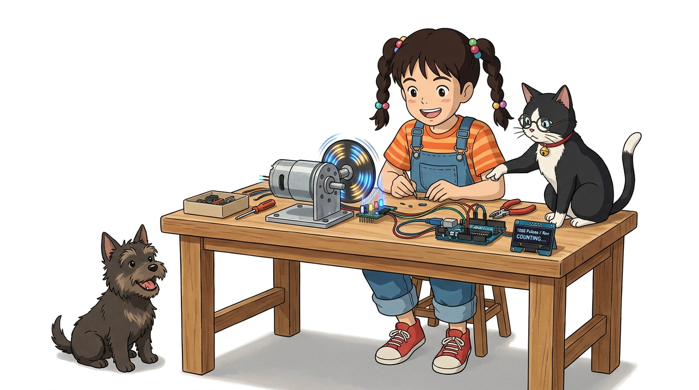
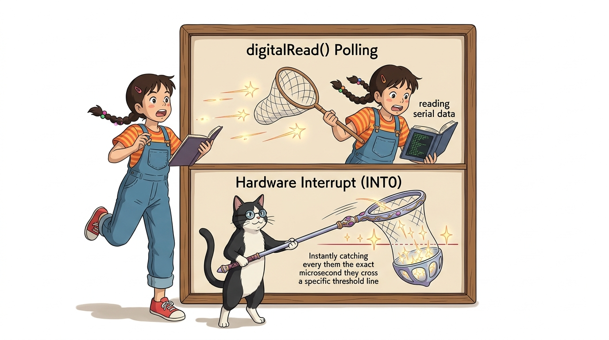
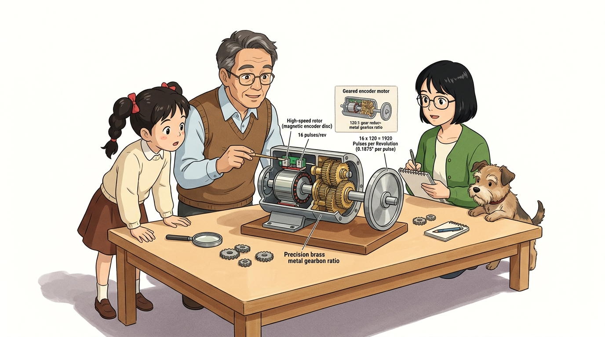
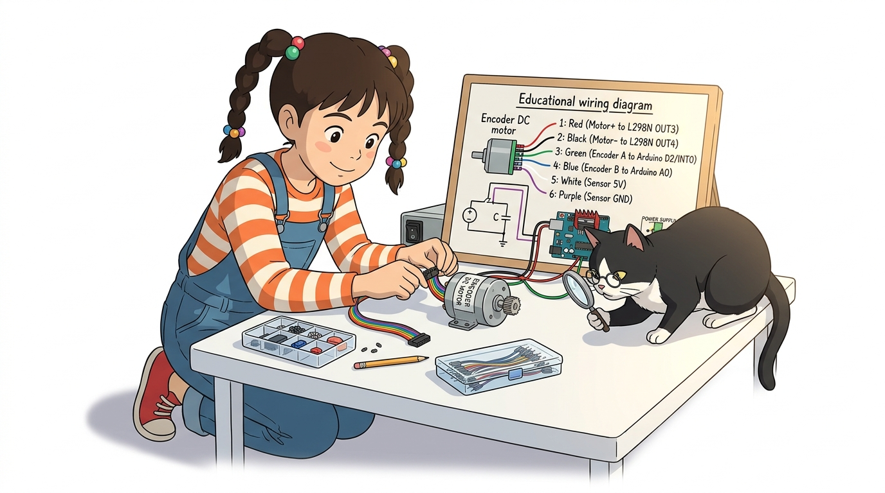
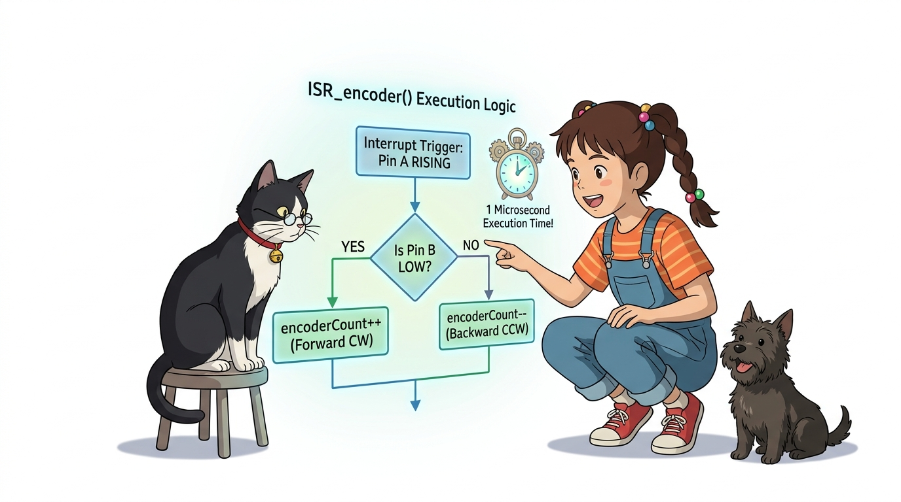

106_엔코더인터럽트_펄스카운트 ⏱️🔢

도로시와 지니가 함께하는 1바퀴당 1920펄스를 놓치지 않고 계수하는 고속 인터럽트 주행 시스템 구축
- 👧 도로시: “지니야! 모터가 쌩쌩 도니까 엔코더 펄스가 1초에 수백 번 넘게 번쩍거리며 쏟아져 나와! 메인 루프에서
digitalRead()로 세다간 숫자를 절반도 못 세고 다 놓쳐버릴 것 같아!” - 🐱 지니: “그래서 바로 외부 하드웨어 인터럽트가 출동하는 거야! 펄스가 튀는 0.000001초(1마이크로초)마다 CPU가 하던 일을 즉시 멈추고 숫자를 카운트하니까, 모터가 아무리 빠르게 돌아도 단 1개의 펄스도 놓치지 않는단다!”
-
🐶 토토: “바우! 바퀴 회전수를 광속으로 세어서 완벽한 자전거 속도계를 만들어보자 멍!”
- 🖥️ 강의 슬라이드: slides.md
1. 도로시의 놀라움: 1초에 수백 개씩 쏟아지는 고속 펄스

⚡ 초고속 펄스(KHz) 환경에서 인터럽트가 필수적인 이유
기어드 DC 모터의 내부 모터 축은 분당 수천 회전(RPM)을 수행합니다.
- 루프 기반 검사의 실패:
- 아두이노가 시리얼 통신을 하거나 센서 값을 읽는 데 10ms만 소요되어도, 그사이에 수십 개의 펄스가 지나가 버려 거리 계산이 완전히 엉망이 됩니다.
- 하드웨어 인터럽트의 완벽함:
- 아두이노가 다른 계산에 열중하고 있어도, 2번 핀(INT0)에 펄스 에지가 도달하는 순간 즉시 인터럽트 서비스 루틴(ISR)이 호출되어 변수를 카운트하므로 100% 무결점 계수를 보장합니다.
2. 감속 기어 내장 엔코더 모터의 분해능 수학

📐 1바퀴당 1920펄스(CPR)의 초정밀 계산법
실습에 사용되는 메탈 기어드 엔코더 모터는 모터 축 뒤편에 마그네틱 엔코더가 장착되어 있습니다.
graph LR
Rotor["모터 내부 고속 축<br>(1회전당 16펄스 발생)"] --> Gearbox["120:1 금속 감속 기어박스"]
Gearbox --> Wheel["최종 바깥 바퀴 축<br>(1회전당 16 x 120 = 1920 펄스!)"]
- 모터 축 분해능: 1회전당 16펄스 (A/B상 4체배 시 64 카운트)
- 내부 기어비: 120 : 1 (기어박스를 거치며 회전각이 120배 정밀해짐)
- 최종 출력축 분해능:
\(16 \text{ pulses} \times 120 = \mathbf{1920 \text{ CPR (Counts Per Revolution)}}\)
- 바퀴가 1바퀴($360^\circ$) 돌 때 아두이노는 1920번의 펄스를 카운팅하므로, 회전각 분해능은 $360^\circ / 1920 \approx \mathbf{0.1875^\circ}$에 달합니다!
3. 6가닥 모터-엔코더 통합 케이블 결선도

🔌 모터 동력 2선과 센서 신호 4선의 명확한 결선
모터 뒤편에서 나오는 6색 리본 케이블을 아두이노와 L298N에 올바르게 연결합니다.
| 핀 번호 및 색상 | 기능 명칭 | 연결 대상 보드 및 핀 | 역할 설명 |
|---|---|---|---|
| 1번 (두꺼운 빨강) | Motor (+) | L298N OUT3 | 모터 구동 전원 (+) |
| 2번 (두꺼운 검정) | Motor (-) | L298N OUT4 | 모터 구동 전원 (-) |
| 3번 (갈색/녹색) | Encoder A | 아두이노 디지털 2번 핀 (INT0) | 인터럽트 주 펄스 신호선 |
| 4번 (파란색) | Encoder B | 아두이노 A0 핀 (디지털 14번) | 회전 방향 판별용 위상 신호선 |
| 5번 (하늘색/흰색) | Sensor VCC | 아두이노 5V | 홀 센서 IC 구동 전원 (+5V) |
| 6번 (보라색) | Sensor GND | 아두이노 GND | 센서 공통 접지 (0V) |
4. 핵심 ISR 함수: 초고속 방향 판별과 펄스 계수

⚡ CHANGE 인터럽트와 상태 캐싱 기법
A상 핀에 CHANGE 모드로 인터럽트를 걸어 전압이 바뀔 때마다 방향을 판별하고 카운트를 증감합니다.
#define ENCODER_A 2 // 외부 인터럽트 핀 (INT0)
#define ENCODER_B A0 // 일반 디지털 입력 핀
volatile long encoderCount = 0; // 인터럽트 누적 펄스 카운터
volatile byte lastA = LOW;
// 펄스 에지가 발생할 때마다 1마이크로초 만에 실행되는 ISR
void ISR_encoder() {
byte currentA = digitalRead(ENCODER_A);
// A상이 LOW에서 HIGH로 치솟는 상승 에지(RISING) 순간만 선별!
if (lastA == LOW && currentA == HIGH) {
// 이때 B상의 전압 상태를 읽어 회전 방향 판별
if (digitalRead(ENCODER_B) == LOW) {
encoderCount++; // 정회전 (시계 방향, 전진)
} else {
encoderCount--; // 역회전 (반시계 방향, 후진)
}
}
lastA = currentA; // 현재 상태 기억
}
5. 실습 스케치: 시리얼 명령 주행 및 실시간 펄스 로깅
💻 키보드로 ‘f’(전진), ‘b’(후진), ‘s’(정지)를 명령하며 실시간 카운트 관찰
#include <Arduino.h>
#define ENCODER_A 2
#define ENCODER_B A0
// L298N 모터 제어 핀 (Motor B 사용 예시)
const int IN3 = 8;
const int IN4 = 9;
const int ENB = 10;
volatile long encoderCount = 0;
volatile byte lastA = LOW;
void ISR_encoder() {
byte currentA = digitalRead(ENCODER_A);
if (lastA == LOW && currentA == HIGH) {
if (digitalRead(ENCODER_B) == LOW) encoderCount++;
else encoderCount--;
}
lastA = currentA;
}
void setup() {
Serial.begin(115200); // 고속 시리얼 통신 권장
pinMode(ENCODER_A, INPUT_PULLUP);
pinMode(ENCODER_B, INPUT_PULLUP);
pinMode(IN3, OUTPUT);
pinMode(IN4, OUTPUT);
pinMode(ENB, OUTPUT);
// A상 핀에 CHANGE 인터럽트 장착!
attachInterrupt(digitalPinToInterrupt(ENCODER_A), ISR_encoder, CHANGE);
Serial.println("명령어 입력: f(전진), b(후진), s(정지)");
}
void loop() {
// 1. PC 시리얼 모니터로부터 주행 명령 수신
if (Serial.available()) {
char cmd = Serial.read();
if (cmd == 'f') { // 전진
digitalWrite(IN3, HIGH); digitalWrite(IN4, LOW); analogWrite(ENB, 180);
} else if (cmd == 'b') { // 후진
digitalWrite(IN3, LOW); digitalWrite(IN4, HIGH); analogWrite(ENB, 180);
} else if (cmd == 's') { // 정지
digitalWrite(IN3, LOW); digitalWrite(IN4, LOW); analogWrite(ENB, 0);
}
}
// 2. 200ms마다 현재 누적된 엔코더 펄스 카운트 출력
static unsigned long lastPrint = 0;
if (millis() - lastPrint >= 200) {
lastPrint = millis();
Serial.print("현재 엔코더 펄스 카운트: ");
Serial.println(encoderCount);
}
}
🌟 도로시와 지니의 핵심 요약 노트!

- 👧 도로시: “바퀴가 1바퀴 돌 때마다 정확히 1920개의 펄스가 찍히고, 후진하면 숫자가 마이너스로 줄어드는 걸 시리얼 모니터로 두 눈으로 직접 확인했어!”
- 🐱 지니: “완벽해! 외부 인터럽트 덕분에 고속 회전 중에도 펄스를 단 하나도 흘리지 않고 완벽하게 주행 거리를 측정할 수 있게 되었단다.”
- 🐶 토토: “바우! 이제 모터가 언덕을 만나도 일정한 속도를 유지하게 만드는 제어공학의 정점, PID 제어를 정복하러 가자 멍!”
서브목차